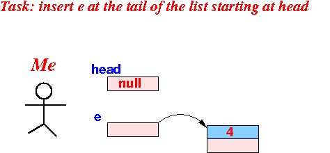

- The
key to
understanding recursion is:
- Figure out how to solve the original problem using the solution of a smaller version of the problem
- After you have
figure out the
key problem above,
you can then:
- Find the base case(s)
(easy to solve problems)
- Find out how to detect
the base case(s)
- The recursive method must use an if-statement to detect each base case and return the solution !!!
- Find the base case(s)
(easy to solve problems)
- How to
solve
the problem of
- Insert a node at the end of a linked list
using the solution of a smaller version of the problem
- Example:
- I want to change this
state
into the following state (i.e., what the list would look like after the node e has been inserted)
by using the solution of a smaller version of the same problem
- Here is a smaller version of
the same problem:
(Notice the list is smaller because the first node is missing
Here is the solution for the smaller problem:
- How I obtain
the solution of
original problem:
let me draw it differently and highlight the smaller solution:
using the solution for the smaller problem:
- Answer: with this statement
head.next = smallerSol;
This is the basis for the recusive algorithm !!!
- I want to change this
state
- Pseudo code for
the recursive algorithm
to insert a node e
at the tail of a list
starting at head:
Node insert( Node head, Node e) { /* =========================================== Recursive algorithm WITHOUT handling of the base case(s) =========================================== */ Node smallerSol; // Suppose head and e are as follows: smallerSol = insert( head.next, e ); // insert( head.next, e ) is this smaller problem: // smallerSol will contains this list: // Solve the original problem: head.next = smallerSol; // Now we have: solution = head; // The solution is the list starting at head // Return the solution list return( solution ); }
- Fact:
- To complete the
recursive algorithm,
we must
find
easy to solve
cases (base cases) and
handle
the base cases
separately
- Otherwise, the recursive method will not terminate --- it will keep calling itself forever
- To complete the
recursive algorithm,
we must
find
easy to solve
cases (base cases) and
handle
the base cases
separately
- Hint:
- Base cases are usually
problems where the
input data is
small in size
Characteristic of base cases:
- Every base case has the property that you can solve the problem using a few simple statements
Base cases for list problems are often:
- When the input list is
empty,
and/or
- When the input list contains one node
- Base cases are usually
problems where the
input data is
small in size
- Question:
- When is it extremely easy to insert a node at the tail of a list ???
Answer:
- When the list has no nodes !!!
- Example:
- Base case:
 How do you detect the base case ?
Answer:
if ( head == null )
- Solution:

- Base case:
- Java code to detect and
handle the
base case in
"insert node at the tail of a list":
if ( head == null ) { e.next = null; solution = e; return solution; }
- The complete
recursive algorithm
in general is as follows:
static SolveProblem( n ) { variables: solution, smallerSol; if ( base case detected ) { solution = solve base case; return solution; } else { smallerSol = SolveProb( n-1 ); // Recursion !!! solution = find solution using smallerSol; return solution; } }Note:
- Recursive methods are almost always a class method (i.e.: static)
- Put the code
that we have develop above
into the
general recursive algorithm form
and we obtain:
private static Node insert( Node head, Node e ) { Node solution, smallerSol; /* -------------------------------------------- Base case: insert at the tail of an empty -------------------------------------------- */ if ( head == null ) { e.next = null; // Mark e as the last node solution = e; // return(solution); // return the simple solution ! } else { /* =========================================================== Solve the problem USING the solution of a smaller problem I know the list is not empty... And "head.next" is a SHORTER list ! =========================================================== */ smallerSol = insert( head.next, e ); // Have "someone else" solve // in smaller problem head.next = smallerSol; // Find solution using smallerSol solution = head; return solution; // Return the solution } }
- How to use this method:
public static void main( String[] args ) { Node head = null; Node e; e = new Node(4); head = RecursiveList.insert(head, e); // Pass head and e as parameter // Method returns a new list RecursiveList.printList( head ); e = new Node(1); head = RecursiveList.insert(head, e); RecursiveList.printList( head ); e = new Node(3); head = RecursiveList.insert(head, e); RecursiveList.printList( head ); e = new Node(7); head = RecursiveList.insert(head, e); RecursiveList.printList( head ); }Output:
[4.0] [4.0 , 1.0] [4.0 , 1.0 , 3.0] [4.0 , 1.0 , 3.0 , 7.0]
- Example Program:
(Demo above code)

- The Recursive List Prog file: click here
- The test Prog file: click here
How to run the program:
- Right click on link(s) and
save in a scratch directory
- To compile: javac testProg.java
- To run: java testProg